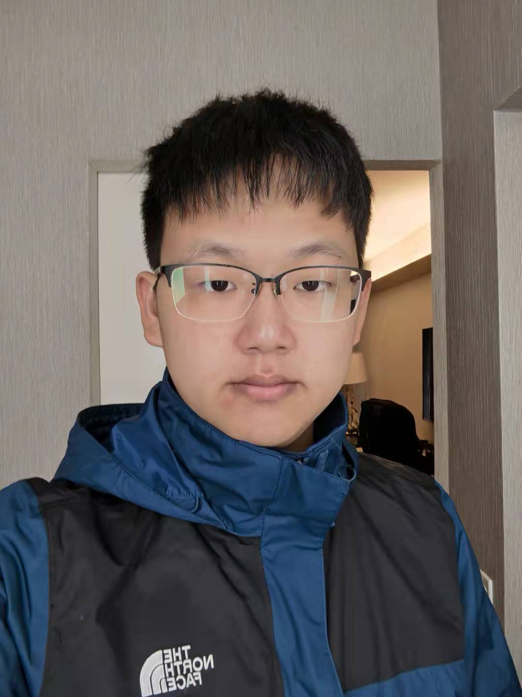

李哲骧（Bruce）
南加州大学 · 计算机科学
你好，我是李哲骧。喜欢把想法快速做成可用的小产品，再把它们打磨成可靠的系统。最近在折腾高效 Transformer 和机器学习系统，也在关注如何把 AI 真正落地到业务场景里。平时会研究市场与商业案例，未来计划读硕士，做更有影响力、能被真实用户使用的技术与产品。
能力
编程语言
Python, Java, C++, JavaScript
技术
Docker, PyTorch, MySQL, GCP, AWS, Transformers
标准化考试
GRE: 162 · 170 · 4.0（2025-06-03）
主修课程
算法与计算理论（CSCI‑270）；数据结构与面向对象（CSCI‑104L）；概率与统计（EE‑364）；线性代数与微分方程（MATH‑225）；人工智能（CSCI‑360）；机器学习（CSCI‑467）；软件工程（CSCI‑310）；嵌入式系统（EE‑109L）；软件开发原理（CSCI‑201）；高等微积分（MATH‑226g）
教育
南加州大学（USC）
2023-08 – 2026-05
加州大学圣克鲁兹（UCSC）
2021-09 – 2023-06
American Heritage School（Boca Delray, FL）
2019 – 2021
苏州德威国际高中
2017 – 2019
良渚安吉路实验中学
2014 – 2017
浙江大学附属小学
2008 – 2014
实习
AI 实习生 — Piezolabs
利用 AI 工具分析医疗事故数据库与竞品；部署 AI 工具并协助测试实验材料。
CEO 助理 — 好安科技有限公司
跨部门轮岗；在网易低代码平台搭建内部系统；协助招募工程师与梳理接口/结构。
应用工程师实习 — Synaptics
为公司最新一代内部产品验证技术路线；测试固件；基于 ESP32 与阿里云完成多协议数据（含 I²C）转换与传输。
投资决策 — GUDU MEDICAL
调研 10+ 医疗科技企业、拜访高管，参与投决并分析中美数字医疗/诊断趋势。
论文
Game theory in companies: ...
2021–2022 跟随加州大学伯克利分校 Ming Gu 教授学习与研究；将发布时间、预告片与平台选择建模为收益矩阵，使用 Gambit 与 Python 求解所有纳什均衡。
PreScored HyperAttention
与 CMU 的 David P. Woodruff 教授合作，提出预评分与选择性注意机制以降低注意力复杂度并保持精度。
项目
活动与竞赛
USC 羽毛球俱乐部
TIE Hub 创业黑客松（5 天）
5 天内完成创意、Demo 与路演。
硅谷公司游学（诺亚主办）
参访多家科技公司，与创始人/投资人交流。
商学院/商业
诺亚商学院（Noah Business School, Noah Holdings）
参与企业参访、融资/运营等模块，与校友导师交流。
之江商学院
围绕战略、运营与团队领导力的系统学习。